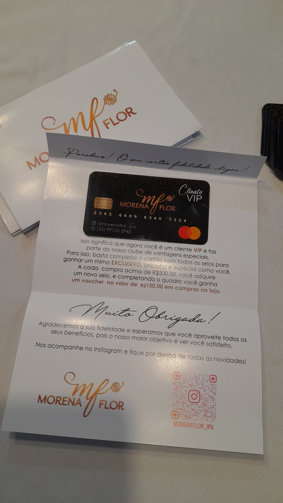

Programa personalizado
Adapte o cartão a pontos, carimbos, compras acumuladas, brindes, descontos ou outras regras da sua campanha.
Crie cartões fidelidade personalizados para incentivar novas compras, valorizar clientes frequentes e fortalecer o relacionamento com sua marca. O conteúdo pode ser adaptado ao seu sistema de pontos, carimbos, vantagens ou recompensas.

O cartão fidelidade pode ser usado por lojas, salões, clínicas, serviços e diferentes tipos de negócio para criar benefícios claros e incentivar o cliente a voltar.
Adapte o cartão a pontos, carimbos, compras acumuladas, brindes, descontos ou outras regras da sua campanha.
Cores, textos, logotipo e informações podem seguir a comunicação visual do seu negócio.
Uma forma simples de organizar benefícios e manter sua marca presente após a compra.
Envie sua arte, referência ou as informações que deseja colocar no cartão fidelidade pelo WhatsApp. Confirmamos formato, material, quantidade, prazo e valor antes da produção.
Envie sua ideia, referência ou regras da campanha e solicite um orçamento personalizado.